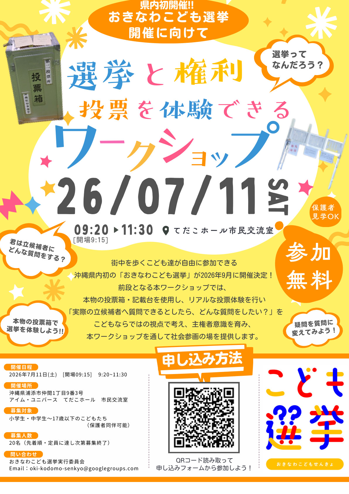

Event News / 2026.07.12更新
【日程変更】「おきなわこども選挙」ワークショップは7月25日に開催します
2026年7月25日(土) 9:20〜11:30に開催が決定しました
台風9号の影響により、会場のアイム・ユニバース てだこホールが閉館となったため、
2026年7月11日(土)午前に予定していた「おきなわこども選挙」ワークショップは延期となっていました。
延期後の日程として、2026年7月25日(土) 9:20〜11:30（開場 9:15）に開催することが決定しました。
2026年9月に県内初開催となる「おきなわこども選挙」に向けて、 選挙や権利について考えるワークショップです。 本物の投票箱・記載台を使った投票体験を通して、こどもたちが社会に声を届けるきっかけをつくる内容です。

StarCraftersは、本イベントに共催として関わっています。こどもたちが地域や社会について自分の言葉で考え、
「聞いてみたいこと」「届けたい声」を形にする機会として、必要な方へ情報が届くよう紹介します。
開催概要
- 開催状況2026年7月25日(土)に開催決定
- 開催日時2026年7月25日(土) 9:20〜11:30（開場 9:15）
- ※ 変更前の日時 2026年7月11日(土) 9:20〜11:30（開場 9:15）
- 会場アイム・ユニバース てだこホール 市民交流室（沖縄県浦添市仲間1丁目9番3号）
- 対象小学生・中学生〜17歳以下のこどもたち（保護者同伴可）
- 定員20名（先着順・定員に達し次第募集終了）
- 参加費無料
- 主催おきなわこども選挙実行委員会
- 共催NPO法人StarCrafters
- 問い合わせoki-kodomo-senkyo@googlegroups.com
ワークショップで体験できること
選挙と権利を知る
地域や選挙のことを学び、社会に声を届ける仕組みについて考えます。
本物の投票を体験する
実際の投票箱・記載台を使い、リアルな投票体験を行います。
候補者への質問を考える
「立候補者へ質問できるとしたら？」を、こどもならではの視点で考えます。
おきなわこども選挙について
「おきなわこども選挙」は、18歳未満のこどもたちが「しらべて・かんがえて・えらんで」、 未来へ声を届ける本気の模擬選挙です。公式サイトでも、沖縄県で2026年9月に実施予定として紹介されています。
チラシ
申し込み・問い合わせ
申し込み方法や最新情報は、公式サイトまたは主催者からの案内をご確認ください。 関連情報は以下のリンクから確認できます。